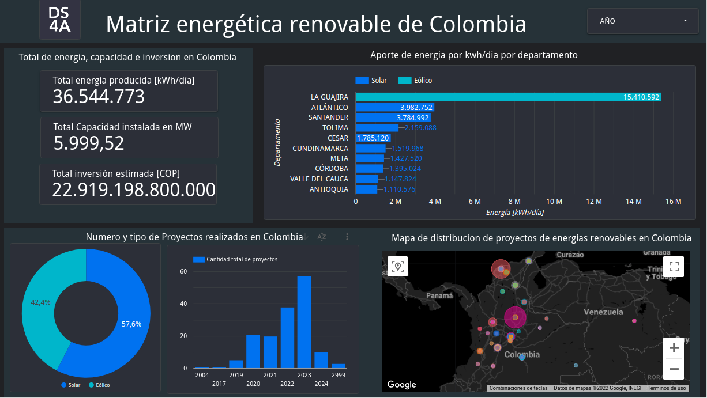

Portada
Integrantes del proyecto:
- César David Llanos Rodríguez
- Moisés Uriel Medina Villa
- María Alejandra Barrios Buelvas
- Victor Manuel Astudillo
Integrantes del proyecto:
Este conjunto de datos contiene 158 filas por 13 columnas fue realizado por el Ministerio de Minas y Energía, en la cual se encuentran los proyectos de energias renovables especificamente Solar y Eolica que estan distribuidos en Colombia, asi mismo la inversion que fue necesaria para poner en marcha estos proyectos.
Este proyecto identifica la capacidad instalada en MW y la energía estimada en kWh/día que generan los proyectos de energía renovable en Colombia. Buscando dar respuesta a las preguntas ¿Cómo está conformada la matriz de energías renovables en Colombia?, y ¿En qué departamentos se produce energías limpias?.
El estudio no contiene comparaciones de las Fuentes No Convencionales de Energía Renovable con las fuentes convencionales que permita identificar cuál ha sido el avance en la incorporación de estas nuevas energías. Una información que podría mejorar el análisis de los datos es la cantidad de equipos instalados. Además de la huella de carbono generada por estos equipos, para hacer un comparativo de cuanto realmente se está disminuyendo las emisiones de CO2 con respecto a fuentes térmicas que son el 30% de la generación de energía en Colombia.
Enlace del conjunto de datos utilizado: ver aqui
Dashboard realizado en Looker Studio
Enlace : Ver aqui
Los proyectos de energía Solar tienen una mayor cobertura en comparación con los proyectos eólicos, pero se puede determinar que existe una distribución en cuestión de ubicación de los proyectos, para la Guajira se encuentra el mayor número de proyectos Eólicos y son los que más aportan en cuestión energía kwh/dia producida, en cuestión de los proyectos solares se encuentran distribuidos principalmente en las 3 regiones: Caribe, Andina y pacífica.